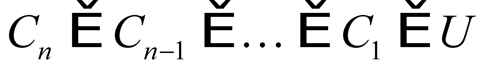
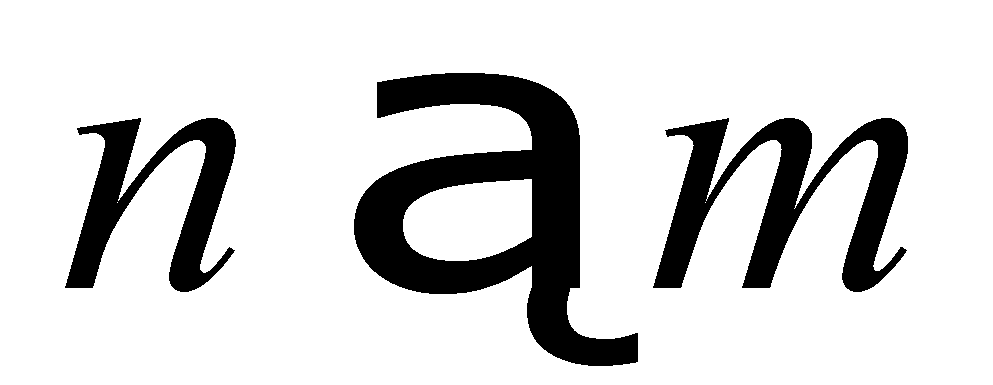
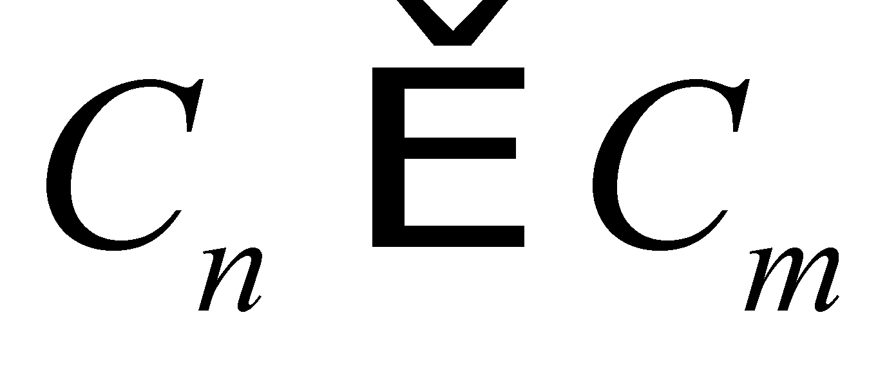

|
|
|
According to The Dictionary of General Mathematics77, etimologically speaking, the word system originates from two Greek words: syn - together and istemi - to arrange. Then, we shall excerpt from other few dictionaries some of the most relevant definitions of this notion:
The Explanatory Dictionary of The Romanian Language78:
System: 1. The set of elements (principles, rules, forces etc.) which depend one another by making-up an organized whole, restoring order into a field of theoretical thinking, it also regulates the material classification within natural sciences field or it makes that a practical activity to be performed in accordance with the aimed goal. 2. The total amount of deposits formed during a geological period. 3. Work method, way of organizing a process, an operation, work style, norm, custom.
Systematic: Which is carried out according to a plan and by observing a previously conceived method; methodic, organized; activity which is carried out with insistency and perseverance.
To systematize: To arrange the elements of a science, of a doctrine, of a description into an organized whole, into a system.
The Technical Dictionary79:
System (techn. gen.): Set of phenomena which are mutually conditioned or influenced by another phenomenon or by a set of associated elements, pieces, equipment, machineries, facilities.
Control system: System which has the role to maintain an invariance dependence relation between the output amount xe and the input amount xi.
System of material points: Set which is made-up from material points with specific weights which are able to interact so that the motion of each of them can depend on the position and on the movements of the other points of the system.
System of measuring units: Set which is made-up from the basic units and from their related measuring units.
Periodic system of elements: Structure method of the chemical elements within a table, based on the periodicity of their chemical properties.
The Physics Dictionary80:
Reference system: Set of geometrical elements (points, lines, areas) or bodies which are considered steady, against which the position and motion of a body may be determined.
The Logics Dictionary81:
Classification system: System of classes obtained through the application of a set of criteria on a set of objects. It may be arranged on n levels (n = 1, 2, ...p). The levels are reached as follows: 1) The set’s objects are distributed into classes according to the criterion K1, let us say that it is the level I; 2) Each class belonging to level I is decomposed according to a criterion K2, by achieving in this way classes belonging to level II etc. The classes are arranged on the horizontal when they have the same level, or on the vertical, when they belong to different levels. There are two types of relations between the classes arranged on the vertical: a) inclusion (strict)82 relations, b) other relations, different from the inclusion ones (such as the filiation ones). The relation may be applicable in the first case, or if n and m are two levels so that  and n m, then .
77 *** - Dicþionar de Matematici Generale - Editura Enciclopedicã Românã, Bucureºti 1974.
78 *** - Dicþionarul Explicativ al Limbii Române - Editura Univers Enciclopedic, Bucureºti 1996.
79 Dicþionar de Termeni Tehnici - Editura Tehnicã, Bucureºti 1972.
80 *** - Dicþionar de Fizicã - Editura Enciclopedicã Românã, Bucureºti 1972.
81 Gheorghe Enescu - Dicþionar de Logicã - Editura ªtiinþificã ºi Enciclopedicã, Bucureºti 1985.
82 First type of classification relations (inclusion) was also used in chapter 1 of the paper herein, for NAMS classification.
Copyright © 2006-2011 Aurel Rusu. All rights reserved.